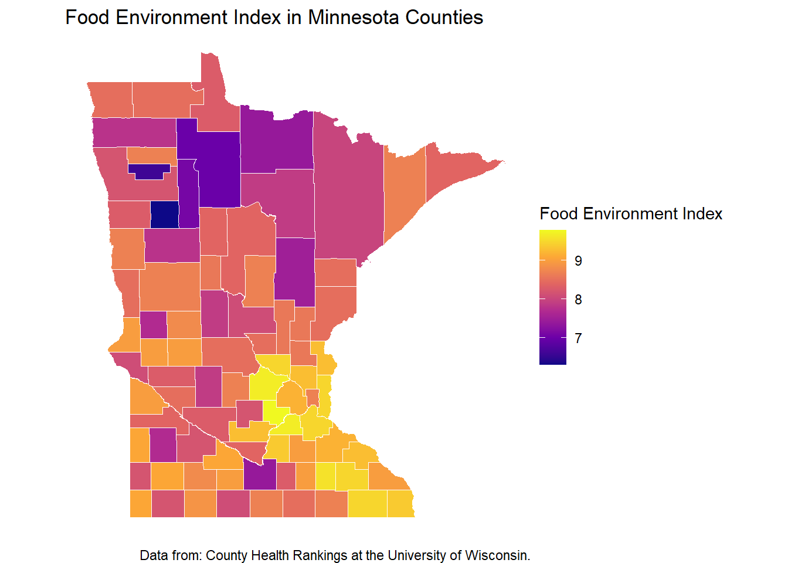

#This gives me townships not counties#mn_count <- read_sf("~/GitHub/portfolio-ccano004/bw/bw-solo_prof_files/tl_2016_27_cousub.shp")#Food envi index datafood_index <-read_csv("../data/food_envi_index_data.csv")
Rows: 88 Columns: 6
── Column specification ────────────────────────────────────────────────────────
Delimiter: ","
chr (2): State, County
dbl (4): FIPS, % With Access to Exercise Opportunities, National Z-Score, Fo...
ℹ Use `spec()` to retrieve the full column specification for this data.
ℹ Specify the column types or set `show_col_types = FALSE` to quiet this message.
# A tibble: 6 × 6
FIPS State County % With Access to Exe…¹ `National Z-Score` Food_Env_Index
<dbl> <chr> <chr> <dbl> <dbl> <dbl>
1 27000 Minneso… <NA> 86 NA 9
2 27001 Minneso… Aitkin 49 0.61 7.5
3 27003 Minneso… Anoka 95 -1.43 9.3
4 27005 Minneso… Becker 62 0.03 7.8
5 27007 Minneso… Beltr… 77 -0.66 7
6 27009 Minneso… Benton 65 -0.12 8.5
# ℹ abbreviated name: ¹`% With Access to Exercise Opportunities`
#Change county variable to remove "county" at the end#mn_counties <- mn_counties |># mutate(County = str_sub(NAMESLAD, 1, -7)) #head(mn_counties)
# mn_count |># st_join(hw) |># head()# This is the incorrect join# joined_food_index <- food_index |># left_join(mn_count, join_by("County" == "NAME"))#Joining our food_index dataset into our shapefile datajoined_food_index <- mn_counties |>left_join(food_index, by =c("NAME"="County"))head(joined_food_index)
Simple feature collection with 6 features and 17 fields
Geometry type: MULTIPOLYGON
Dimension: XY
Bounding box: xmin: -96.87166 ymin: 44.54176 xmax: -91.78913 ymax: 48.63149
Geodetic CRS: NAD83
STATEFP COUNTYFP COUNTYNS AFFGEOID GEOID NAME
1 27 137 00662850 0500000US27137 27137 St. Louis
2 27 107 00659499 0500000US27107 27107 Norman
3 27 173 00659531 0500000US27173 27173 Yellow Medicine
4 27 097 00659494 0500000US27097 27097 Morrison
5 27 023 00659457 0500000US27023 27023 Chippewa
6 27 139 00659514 0500000US27139 27139 Scott
NAMELSAD STUSPS STATE_NAME LSAD ALAND AWATER FIPS
1 St. Louis County MN Minnesota 06 16182544691 1586178745 27137
2 Norman County MN Minnesota 06 2260512788 10208059 27107
3 Yellow Medicine County MN Minnesota 06 1966062967 10687958 27173
4 Morrison County MN Minnesota 06 2913980724 73275528 27097
5 Chippewa County MN Minnesota 06 1505361877 17238350 27023
6 Scott County MN Minnesota 06 922320608 31800969 27139
State % With Access to Exercise Opportunities National Z-Score
1 Minnesota 81 -0.85
2 Minnesota 40 0.97
3 Minnesota 45 0.76
4 Minnesota 46 0.71
5 Minnesota 57 0.24
6 Minnesota 95 -1.46
Food_Env_Index geometry
1 8.0 MULTIPOLYGON (((-93.09802 4...
2 8.3 MULTIPOLYGON (((-96.87166 4...
3 8.4 MULTIPOLYGON (((-96.45183 4...
4 8.1 MULTIPOLYGON (((-94.65346 4...
5 8.5 MULTIPOLYGON (((-96.03669 4...
6 9.7 MULTIPOLYGON (((-93.9114 44...
# Now joined_food_index is still an sf object.ggplot(data = joined_food_index) +geom_sf(aes(fill = Food_Env_Index), color ="white", na.rm =TRUE) +coord_sf(lims_method ="geometry_bbox") +scale_fill_viridis_c(option ="plasma", name ="Food Environment Index") +labs(title ="Food Environment Index in Minnesota Counties") +theme_minimal()

Food Environment Index by Minnesota Counties. Data from: County Health Rankings at the University of Wisconsin
Source Code
---title: "Solo Project"---```{r}library(tidyverse)library(leaflet)library(sf)library(rnaturalearth)library(ggplot2)library(tigris)#Use this for counties with geography columnmn_counties <-counties(state ="MN", cb =TRUE)#This gives me townships not counties#mn_count <- read_sf("~/GitHub/portfolio-ccano004/bw/bw-solo_prof_files/tl_2016_27_cousub.shp")#Food envi index datafood_index <-read_csv("../data/food_envi_index_data.csv")#https://www.countyhealthrankings.org/health-data/community-conditions/health-infrastructure/health-promotion-and-harm-reduction/food-environment-index?year=2025&state=27&tab=1``````{r}ggplot() +geom_sf(data = mn_counties) mn_counties |>head()#+ coord_sf(crs = "+proj=merc")#mn_count |> arrange(NAME) |>#head()#view(mn_count)head(food_index)#Change county variable to remove "county" at the end#mn_counties <- mn_counties |># mutate(County = str_sub(NAMESLAD, 1, -7)) #head(mn_counties)``````{r}# mn_count |># st_join(hw) |># head()# This is the incorrect join# joined_food_index <- food_index |># left_join(mn_count, join_by("County" == "NAME"))#Joining our food_index dataset into our shapefile datajoined_food_index <- mn_counties |>left_join(food_index, by =c("NAME"="County"))head(joined_food_index)``````{r fig.cap = "Food Environment Index by Minnesota Counties. Data from: County Health Rankings at the University of Wisconsin" , fig.alt = "Food Environment Index by Minnesota Counties"}# Now joined_food_index is still an sf object.ggplot(data = joined_food_index) + geom_sf(aes(fill = Food_Env_Index), color = "white", na.rm = TRUE) + coord_sf(lims_method = "geometry_bbox") + scale_fill_viridis_c(option = "plasma", name = "Food Environment Index") + labs(title = "Food Environment Index in Minnesota Counties") + theme_minimal()```